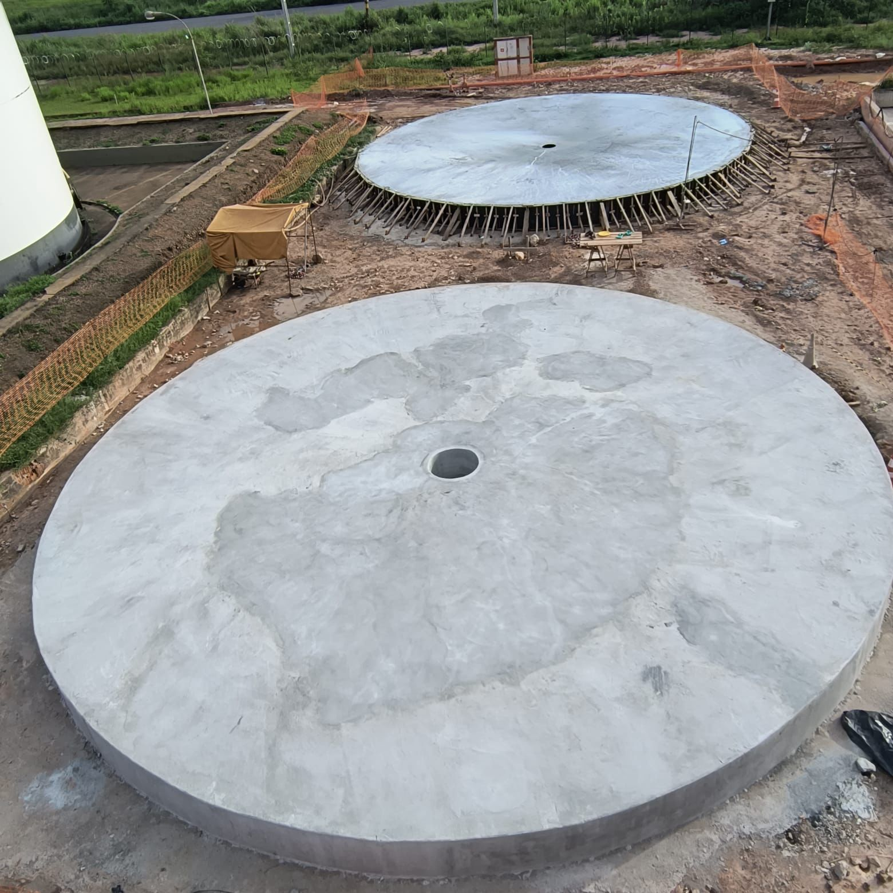

Ligue agora!:
(21) 3090-0423
E-mail:
qualiconsul@qualiconsul.com.br

Execução de fundações circulares em concreto armado destinadas à instalação de tanques industriais de armazenamento, com controle rigoroso de nivelamento, resistência estrutural e acabamento superficial.
As atividades incluíram montagem de formas radiais, armação metálica, lançamento e acabamento mecânico do concreto, seguindo critérios técnicos de engenharia civil industrial e normas aplicáveis para estruturas de grande porte.
O projeto contemplou a construção simultânea de bases circulares para futura implantação de tanques metálicos industriais, priorizando estabilidade estrutural, uniformidade geométrica e controle tecnológico do concreto.
“ Assegurar precisão estrutural e qualidade executiva em fundações industriais é essencial para a segurança e longevidade operacional dos ativos.”
A engenharia executiva definiu o dimensionamento das fundações considerando distribuição de cargas, recalque admissível do solo e esforços provenientes da operação dos tanques.
O processo construtivo utilizou escoramentos periféricos, controle topográfico contínuo e procedimentos de concretagem planejados para garantir integridade estrutural e acabamento homogêneo.
Planejamento integrado das etapas de armação, forma, concretagem e cura, com acompanhamento técnico em campo e verificação dimensional em todos os marcos críticos da execução.
Regularização do terreno, compactação controlada e preparação da plataforma para execução das fundações circulares.
Execução de formas radiais e posicionamento das armaduras conforme projeto estrutural e especificações técnicas.
Lançamento contínuo do concreto com nivelamento técnico, adensamento mecânico e acabamento superficial desempenado.
Monitoramento do processo de cura, ensaios tecnológicos do concreto e inspeções dimensionais para liberação estrutural.
As dimensões elevadas das estruturas exigiram planejamento rigoroso da concretagem para evitar juntas frias, retrações excessivas e desvios geométricos.
Utilização de referências topográficas e conferências contínuas para garantir planicidade e alinhamento circular das bases.
Acompanhamento de slump test, resistência mecânica e rastreabilidade dos lotes aplicados durante toda a execução.
As fundações foram entregues com elevado padrão de acabamento, conformidade dimensional e desempenho estrutural compatível com os requisitos operacionais dos tanques industriais previstos para a planta.

A execução reforçou os padrões de qualidade e controle técnico aplicados pela Qualiconsul em obras industriais de infraestrutura pesada, assegurando confiabilidade, durabilidade e segurança operacional para futuras etapas de montagem eletromecânica.
Cada entrega é conduzida sob critérios de inspeção de qualidade, rastreabilidade de processos e disciplina operacional, assegurando precisão na execução, aderência a normas aplicáveis e confiabilidade em ambientes de alta criticidade. Unimos engenharia, supervisão técnica e governança de campo para transformar escopo em resultado industrial mensurável, com segurança, previsibilidade e excelência na conclusão dos projetos.